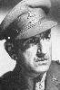

Country:United States, 72 minutes
Spoken languages:
Genres:Action, Adventure
Director(s):Edward A. Kull, Wilbur McGaugh
Writer(s):
Video Codec:Unknown
Number: 1616


Certification:
Storyline:
Tarzan retells the story of a trip to Guatemala in which the ape-man had gone to aid a friend in searching for a very valuable totem pole called the Green Goddess. Second of two feature versions of the 1935 serial film "The New Adventures Of Tarzan", culled from the serial's last 10 episodes.
Cast: 

Medium: Original DVD,
Comments: Part of: Wrath of the Sword - 20 movie collection
Loaned: No
Aspect ratio: Unknown